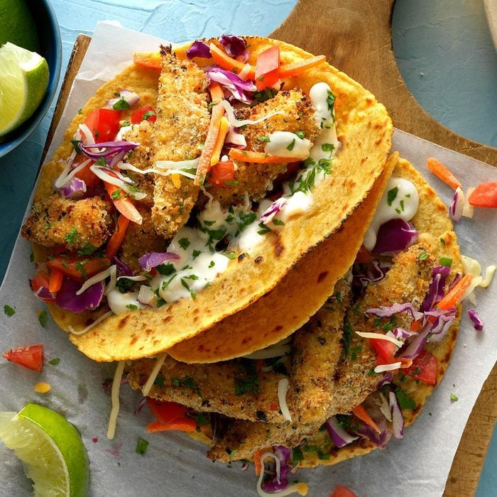

Fish Tacos

Description
Don't want to eat any farmland animals? Want something seafood related? Well look no further, here is a easy recipe for Fish Tacos!
These crispy, crunchy Fish Tacos are a hit wether you enjoy them alone with family or friends! You can never go wrong with this meal!
Ingredients
- 1⁄2 cup fat–free mayonnaise
- 1 tablespoon lime juice
- 2 teaspoons fat–free milk
- 1 large egg
- 1⁄3 cup dry bread crumbs
- 2 tablespoons salt–free lemon–pepper seasoning
- 1 pound mahi mahi or cod fillets, cut into 1–inch strips
- 4 corn tortillas (6 inches), warmed
Toppings
- 1 cup coleslaw mix
- 2 medium tomatoes, chopped
- 1 cup shredded reduced–fat Mexican cheese blend
Directions
- For sauce, in a small bowl, mix mayonnaise, lime juice and milk; refrigerate until serving.
- In a shallow bowl, whisk together egg and water. In another shallow bowl,
toss bread crumbs with lemon pepper. Dip fish in egg mixture, then in crumb mixture,
patting to help coating adhere.
- Place a large nonstick skillet over medium–high heat. Add fish;
cook 2–4 minutes per side or until golden brown and fish just begins to flake easily with a fork.
Serve in tortillas with toppings and sauce.
Back to Home Page